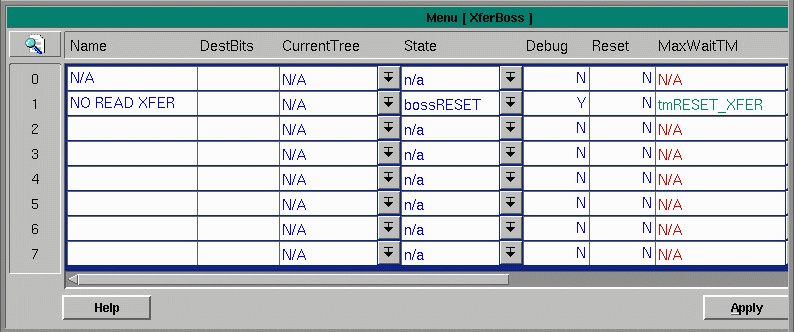

XferBoss Menu

XferBoss has one record for each transfer to be configured. This menu has the following fields:
Name - a string of characters describing the transfer
DestBits - a string of bits where a destination is represented by a 1 in one of the bit positions
CurrentTree - brings up the XferTree menu where a product path is shown
State - brings up the XferStatePop menu
Debug - if 'Y' will write to logs for debugging, if 'N' will not write the steps to logs
Reset - a 'Y' entered here resets the state of the transfer
MaxWaitTM - brings up the timer menu from which to select a timer set for the max wait time
ScanINPUT - brings up the Conveyor menu from which to select a photoeye detecting presence
ScanMenu -brings up the Menu of Menus from which to select the menu receiving the scan
ScanRecvCol - used to synchronize with scan menu
ScanRecvRec -used to synchronize with scan menu
Copyright © 2001 Fortna Inc. All rights reserved.